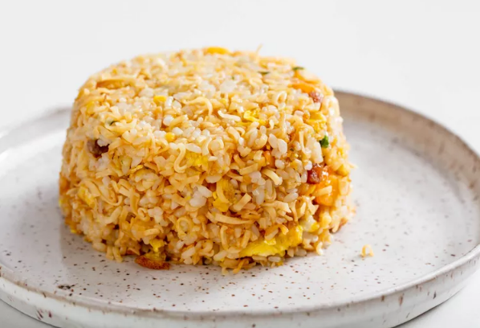

Instant Ramen Fried Rice

Description
This isn't just drunk food; it's survival food.
There's very little to say about the technique here: This is supposed to be easy and near-instant, so trying to
optimize for every step pretty much defeats the purpose. Plus, it's delicious, so there's really no need to
overthink it.
But don't worry; we promise this is hot-damn good!
(All credit to Serious Eats for this content.)
Ingredients
- One 2.5-ounce (71g) cup instant ramen noodles, such as Cup Noodles, in flavor of your choice
- Boiling water
- 3 tablespoons (45ml) canola oil or other neutral oil
- 1 large egg, beaten
- 1 cup (7 3/4 ounces; 220g) cooked medium- or short-grain rice (see note)
- Kosher salt
Directions
- Transfer contents of instant noodles cup (dried noodles plus all seasonings and mix-ins) to a zipper-lock bag or
mixing bowl. Crush noodles well into roughly rice-size pieces, but don't obsess about it.
- Return crushed noodles and seasonings to cup.
- Add just enough boiling water to wet contents of cup but no more than that. Cover and let stand while you
continue with the recipe.
- In a large nonstick skillet, wok, cast iron, or carbon steel pan, heat oil over high heat until shimmering. Add
egg and cook, stirring, until just scrambled.
- Add rice and cook, stirring constantly and breaking up any small lumps, until heated through and glazed in the
oil, about 2 minutes.
- Add soaked ramen along with any liquid and cook, stirring and tossing constantly, until excess moisture has
cooked off and rice and noodles are lightly golden and toasted, 3 to 4 minutes. Season with salt.
- Transfer to a serving platter or pack into a heatproof bowl, then invert bowl on a plate to make a compact mound
of rice.
- If a heartier meal is desired, you can whip up a 4-egg omelette following the instructions in our omurice recipe
and unfurl it on top of the mound of rice; top with ketchup and anything else you want (nori flakes are shown
here) before serving.
Home